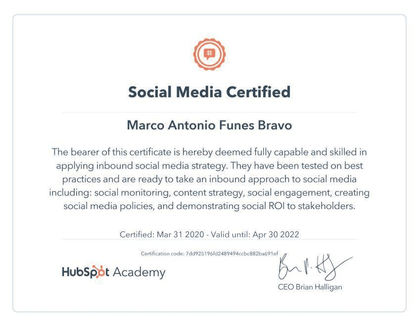
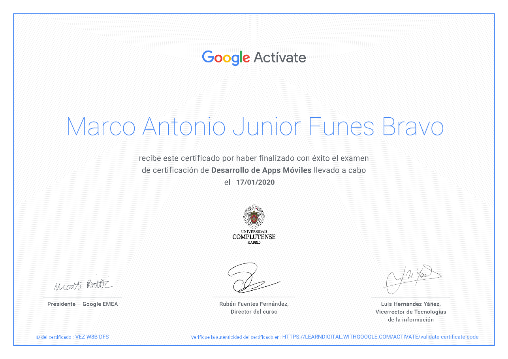
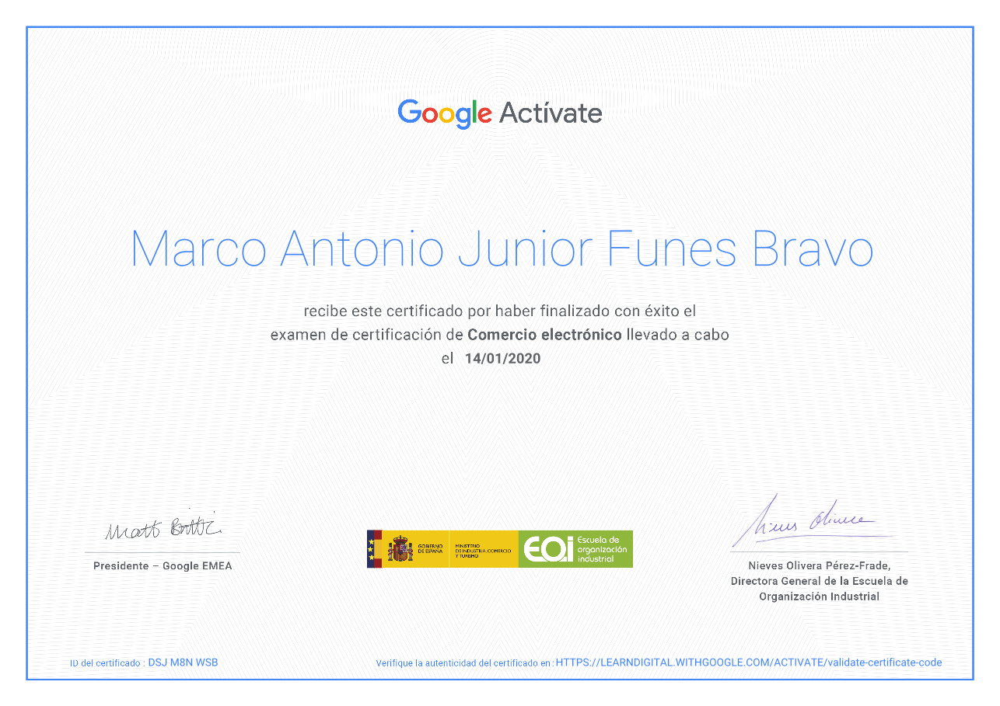
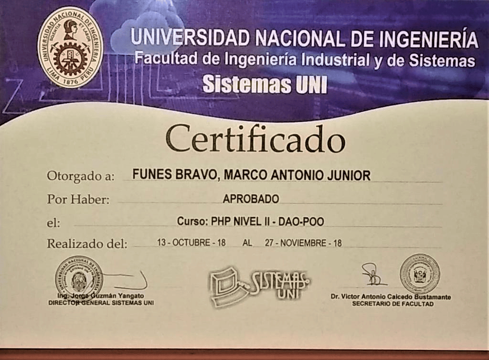
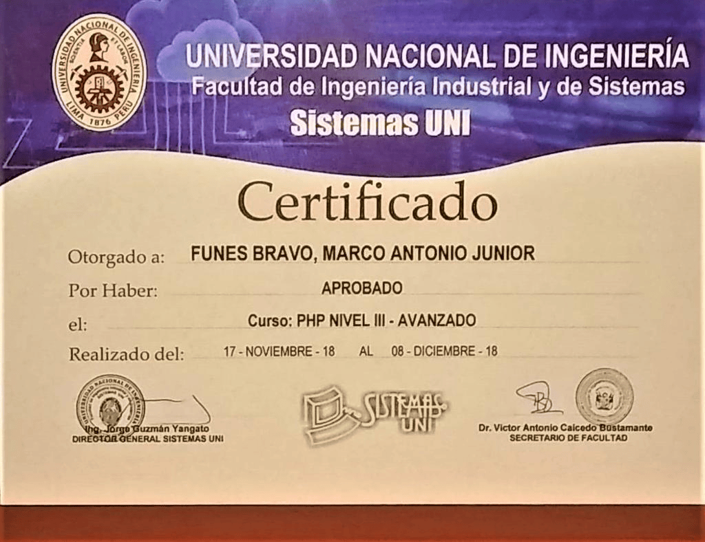
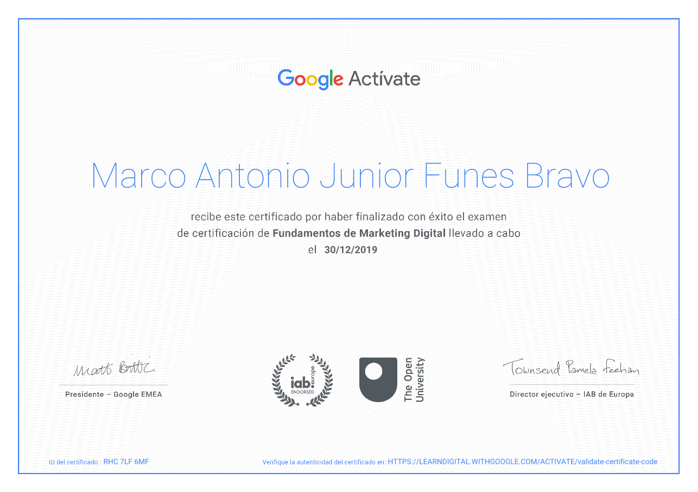
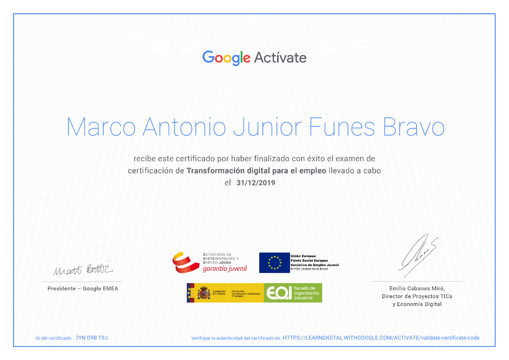
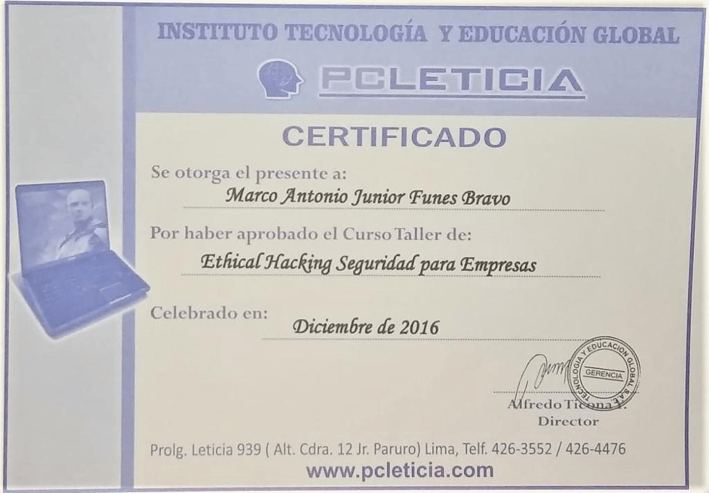

Perfil Profesional
Profesional con más de 6 años de trayectoria en el ecosistema digital, articulando estrategia comercial, desarrollo tecnológico y gestión operativa. Especializado en la transformación digital de empresas mediante el diseño de arquitecturas web, automatización de flujos de trabajo e integración de herramientas CRM y bases de datos para optimizar la eficiencia del negocio. Destaco por mi alta capacidad autodidacta, visión analítica y liderazgo en proyectos interdisciplinarios. Mi meta profesional es seguir impulsando el crecimiento escalable de organizaciones mediante la innovación tecnológica continua, la optimización de procesos (BPM) y la implementación de soluciones digitales de alto impacto.
Portafolio de Proyectos
Portafolio de Proyectos en Desarrollo y Gestión Web
Portafolio de Proyectos en Marketing y Tranformacíón Digital
Portafolio de Diseño Gráfico
Experiencia Laboral
Digital Project Manager
Ene 2020 - Sep 2026- Transformación Digital & Procesos: Diseño, desarrollo y ejecución de los procesos organizacionales y digitales de la empresa, optimizando la atención al cliente, los flujos de ventas y la proyección de crecimiento comercial.
- Desarrollo Web & Sistemas a Medida: Gestión y desarrollo del sitio web corporativo, junto con la implementación de un sistema a medida para la reserva y gestión de citas de tratamientos faciales.
- Estrategia CRM & Inbound Marketing: Integración y administración del CRM corporativo para la gestión centralizada de la cartera de clientes, automatizando campañas masivas de remarketing e Inbound Marketing.
- Marketing 360° & Ads: Planeamiento y ejecución de campañas de publicidad digital (ADS) en redes sociales, administrando la parrilla de contenidos para maximizar el posicionamiento de marca y generar leads cualificados para la fuerza de ventas.
- Producción Audiovisual & Diseño: Creación de piezas gráficas y contenido audiovisual utilizando Adobe Illustrator, Photoshop y Filmora.
- Gestión de Alianzas B2B: Coordinación y formalización de alianzas estratégicas corporativas para la realización de eventos de salud y bienestar dirigidos al talento humano de empresas aliadas.
Digital Project Manager
Jul 2022 - Mar 2023- Lanzamiento y Gestión de Plataformas Web: Dirección integral del plan estratégico digital para el lanzamiento de plataformas a medida orientadas al transporte, alquiler y venta de maquinaria pesada.
- Estrategia Publicitaria Multicanal (Ads): Diseño y ejecución de campañas de pauta digital de alto rendimiento en Google Ads, Facebook Ads y LinkedIn Ads para potenciar la interacción de usuarios y la captación de clientes.
- Optimización UX y Analítica Web: Monitoreo diario del tráfico, interacciones y métricas clave mediante Google Analytics (GA3 y GA4), Semrush y Facebook Business, coordinando mejoras de usabilidad con el área de sistemas.
- Posicionamiento SEO: Implementación de estrategias SEO efectivas para mejorar la visibilidad orgánica de múltiples páginas del sitio web y posicionar a la empresa en los primeros resultados de búsqueda en Perú.
- Diseño Gráfico Publicitario: Creación y gestión de piezas gráficas y propuestas visuales de alto impacto enfocadas en las campañas comerciales y de conversión.
PHP Web Developer
Jul 2018 - Mar 2019- Desarrollo de Sistema ERP (Sector A&B): Co-desarrollo e implementación modular de un sistema ERP a medida para el rubro de Alimentos y Bebidas, alineando funcionalidades con las exigencias operativas y del mercado.
- Arquitectura Backend & MVC: Programación en PHP utilizando el framework CodeIgniter bajo el patrón de arquitectura Modelo-Vista-Controlador (MVC) para garantizar los estándares de mantenibilidad y escalabilidad del código.
- Desarrollo Frontend & Asincronía: Creación de interfaces dinámicas e interactivas mediante JavaScript, jQuery y peticiones asíncronas con AJAX para optimizar la experiencia de usuario sin recargas de página.
- Gestión y Modelado de Bases de Datos: Diseño, administración y optimización de bases de datos relacionales en MySQL, utilizando Navicat para la gestión avanzada de estructuras y consultas.
Especialista Técnico en Marketing Digital & Business Process Management (BPM)
Jul 2017 - Mar 2018- Implementación & Consultoría de CRM: Adaptación, configuración y consultoría interna de un CRM empresarial, centralizando la cartera de clientes y liderando capacitaciones para el uso efectivo del sistema.
- Integración de Sistemas & Web Services: Supervisión y seguimiento de integraciones vía APIs/Web Services entre el sitio Web E-commerce, el sistema ERP corporativo y la plataforma CRM para la sincronización de datos operativos.
- Automatización & Marketing Omnicanal: Configuración de herramientas de email marketing (Mailchimp), correo corporativo (Outlook) y telefonía VoIP integrados directamente al CRM para potenciar campañas de Inbound y Content Marketing.
- Analítica, Bots & Tracking: Implementación de píxeles de seguimiento y bots automatizados para Facebook y la web, analizando el comportamiento del usuario para optimizar la conversión y la productividad comercial.
- Estrategia Digital 360° & SEO: Gestión integral de presencia en redes sociales, medios masivos digitales y estrategias de posicionamiento SEO para mejorar la visibilidad orgánica de la empresa.
Auxiliar de Sistemas, Marketing & Desarrollo de Software
Feb 2017 - Jun 2017- Soporte en Desarrollo Web & Software: Apoyo en la maquetación y desarrollo del sitio web corporativo, participando además en la creación y soporte de aplicaciones de escritorio para la gestión interna.
- Gestión de Bases de Datos de Productos: Administración y mantenimiento directo de la base de datos del inventario de productos de la empresa, garantizando la integridad de la información comercial.
- Gestión de Marketing Digital: Manejo de las estrategias iniciales de presencia digital y canales de comunicación online para la marca.
- Soporte Técnico e Infraestructura TI: Mantenimiento, diagnóstico y soporte técnico continuo a los equipos informáticos y red de la empresa.
Educación & Certificaciones
Titulación en Desarrollo de Software
2016 - 2018Especializaciones & Certificaciones Destacadas
2016 - Presente
Certificado de Social Media entregada por Hubspot
Esta especialización obtenida permite complementar mis conocimientos en Social Media...

Certificado Fundamentos Desarrollo de Aplicaciones Móviles
Especialización que contribuyó a poder gestionar un plan de acción...

Certificado E-commerce
Esta especialización contribuyó a mejorar la perspectiva del comercio electrónico...

Certificado POO PHP Intermedio
Conocimiento profundo en el área de desarrollos que impliquen programación...

Certificado POO PHP Avanzado
Conocimiento profundo en el área de desarrollos que impliquen programación...

Certificado Fundamentos de Marketing Digital
Actualización sobre marketing digital 3.0 y estrategias 360...

Certificado Transformación digital para el empleo
Implementación de procesos y automatizaciones digitales...

Certificado Ethical Hacking Seguridad para empresas
Conocimiento en seguridad para la gestión de desarrollos a medida...
Habilidades, Conocimientos & Herramientas Aprendidas
Manejo de Herramientas Publicitarias para RRSS:
Lenguajes y Herramientas de Programación:
Gestores de Contenido Web (CMS):
Herramientas de Medición & Analítica:
Implementación de CRM:
Herramientas de Diseño Gráfico & Audiovisual:
Habilidades Adicionales:
Contacto
¿Te interesa mi perfil? Ponte en contacto conmigo directamente: